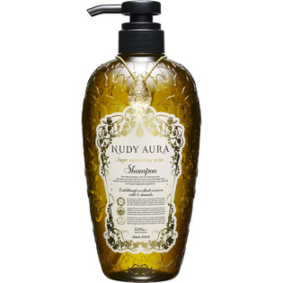

返回列表
产品名称：サンテック産業 ヌーディオーラ シャンプー

ジャパンゲートウェイ サンテック産業 ヌーディオーラ シャンプー ６００ｍｌ
メーカー ジャパンゲートウェイ
JANコード 4562200532010
商品の特徴
8種類の高級保湿成分がもたらす贅沢な洗浄力。ノンシリコンなのにきしみがなく滑らかな手触り。天然由来低刺激性洗浄成分がホイップクリームのような繊細な泡立ちを実現。髪を優しく洗い上げるシャンプーです。
成分・分量
用法及び用量